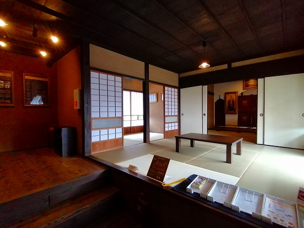

とある新聞記事で興味をそそられたので
旧手賀教会堂というところに行ってきたよ。
場所は柏市の手賀というところ。
柏市の手賀というとあまりピンと来ないが、手賀沼から流れる手賀川の流域である。
以前は沼南町という町だったはず。いつの間にか柏市に編入されてたのね。
この手賀川周辺は江戸時代から戦後にかけてかなり大規模な干拓がなされた場所だ。
ちなみに昭和30年代には
手賀沼ディズニーランド計画があったの知ってます？
ＴＤＬが浦安じゃなくて手賀沼にあったとしてら…今では想像もできないっすよねー。
トーキョーディズニーシーならぬ手賀沼ディズニー沼、ですよ！
…手賀まではJR成田線の湖北駅から歩いて数キロ(柏駅からバスはあるが本数が絶望的に少ない）。
このような真っっっっっ平な水田が遥か彼方まで広がっており、勿論歩いている人間など私しかいない。
あまりにも途方もないところを延々と歩く羽目になったので、くちオムツを外して好きな曲を思いつくまま片っ端から熱唱してやりましたよ！
で、田んぼも途切れ気味になって足も疲れて来た頃、こんな看板が現れる。

おお、いよいよ旧手賀教会堂のおでましか〜。
今回訪れるのは「教会」である。
キリスト教の教会なのだが、その中でも
正教会の教会なのだ。
正教会といえばギリシャ正教やロシア正教が有名だ。
この宗派は西ヨーロッパに広がり今やキリスト教の本流となったカトリックやプロテスタントとは違い、主に東ローマ帝国で広まったもので、今でもギリシャ、東欧、ロシアといったエリアで信仰されている。
我が国にも幕末に伝わり、日本正教会が発足している。
何といっても有名なのは
東京神田のニコライ堂であろう。
その他、ハリストス正教会として北は北海道から南は鹿児島まで日本中に数多くの教会を構えているのである。
その多くが都市部にあるのだが、何故かこんな辺鄙な（失礼！）在にあるのが何とも不思議なハナシではある。
ともかく件の教会に向かおうではないか。
で、コレがその教会なのである。
チョット待て！とお思いの方も多かろう。
そう、
この建物こそが日本正教会旧手賀教会堂なのだ。
私もにわかには信じられなかった。
他所のハリストス教会といえば、それなりに異国情緒溢れる教会建築だったりしますよね。
何で、ここだけこんな建物？と思われるのはよ〜く判ります。私もそうだったから。
唯一、教会っぽいといえばこの二つの丸窓。
アーチ状の窓の中に十字が切られており、
辛うじて教会であることを主張しているかのようだ。
頭の中が？？？で一杯になったところで中に入ってみる。
本当に教会なのかな？ここ。瓦の裳階のようなものと丸窓以外はどう見ても昔の農家だよなー。

中に入ってみると、思いの外綺麗に整備されていた。

それもそのはず。この建物はつい最近修復を終えたばかりなのだ。
令和3年4月から一般公開がはじまったばかり。
詳しくは柏市のサイトなどで確認してください。
見た感じホント、映画の中で出てくる田舎のおばあちゃんち、という感じなのだが…
座敷の奥に祭壇のようなものが見えるぞ。
嗚呼、まさにここは正教会の宗教施設だったんだ。
東方正教会お約束のイコン画が並んでいる。
ここで改めてこの教会堂が出来た経緯を少し説明させていただく。
明治初期、御多分に漏れずこの地方に住んでいる人々の間でも西洋文明への知識熱が高まっていた。
特にこの辺りには裕福な農家が多く、それらの人々が中心になって正教会を誘致し、
日本に正教会を創設したロシアのニコライ・カサートキンをこの地に招き、西洋の文明や宗教事情を学ぼう、と考えたのだ。
そこで既存の建物をひとつ提供し、正教会堂としたのだ。
元々この建物は隠居小屋として使われていたらしい。それを改装して教会にしたのだ。
こうして明治14年、世にも珍しい
「茅葺の教会」、日本ハリストス手賀教会が出来上がった、という訳。
ちなみに首都圏で最古の教会建築である。
ついでに言うと神田のニコライ堂の竣工はこの教会堂の10年後、明治24年。
ここより600ｍ程南東に戦後に作られた新手賀教会がある。
なので、ここは明治初期の正教会の様子を留める県指定文化財として保存展示されているのだ。
この扉の向こうが至聖所といい、聖職者しか入れないという。
信者はこの手前の聖所といわれる部屋で礼拝をするのだ。
この至聖所と聖所を隔てる壁を
イコノスタス（またはイコノスタシス）といい、正教会が最も重視する部分だ。
そこはイコン(聖画）で飾られている。
ここのイコノスタスは極めてシンプルだが、東欧やロシアの正教会などに行くとそれはそれは見事なイコンと装飾で覆われた豪華絢爛なイコノスタスが見られる。

扉には4人の聖人の絵が掲げられている。
右の方、漢字書いてますね？
中央の扉の右側にはキリストの図。
左側にはマリアの図が。
そして中央扉の上には機密の晩餐と呼ばれる絵。最後の晩餐のことなのだろうか。
スミマセン、正教詳しくないんで間違ってたらご指摘くだされ。
上記3点の絵画を手掛けたのは
山下りんという画家。
茨城県笠間市に生まれた彼女はロシアに留学し、正教会のイコン画を学んだ。
その後東日本にあるハリストス正教会のイコン画の多くを手掛けたのだ。
当初山下はイコン画には熱心ではなく、イタリアの絵画に興味があった。
彼女が日本で学んでいた工部美術学校は教授が全員イタリア人で、山下はアントニオ・フォンタネージの指導を受けていたという。
フォンタネージ自身はロマン主義の風景画家で、門下生には浅井忠、五姓田義松、山本芳翠といった錚々たる明治の洋画家が名を連ねる。
そんな中、山下りんは同級生の山室政子の誘いで正教会に入信する。
すでに余談に突入しているのは合点承知だが、常駐していたボランティアガイドさんの話が面白かったので付け足しておく。
元々は同級生で正教会への信仰に熱心だった山室政子がロシアに渡りイコン画を学ぶはずだった。
当時ロシア正教会サイドでも日本での布教を広げるためにイコン画を制作する日本人画家を育成しようという思惑があったようだ。
ところが山室が結婚したためにその役目が山下りんに回ってきたのだ。
当時イタリア絵画を志向していた山下はあまり乗り気ではなかったが、留学先のサンクトペテルブルグにはあのエルミタージュ美術館があり、そこに行けばイタリアの至宝ラファエロの絵画が見られるというのが秘かなるモチベーションだったようだ。
実際、彼女の日記には「イコンはおばけ絵」と書かれており、戒律の厳しい生活に疲れて体調を崩して早期に帰国したらしい。
それでも彼女はイコン画をマスターし、帰国後は精力的にイコン画を制作し続けたという。
ここにある彼女のイコン画はレプリカで、オリジナルは新手賀教会にあり、今でも信仰の対象として掲げられているという。
そのイコン画を照らす丸窓。
この丸窓も当初はなく、教会になってから後付けされたそうだ。
この教会が出来て約10年後にようやくニコライが手賀の地にやってくる。
ニコライの滞在記によるとここまでの道のりは険しく散々だったようだ。
その後、明治後期になると正教会自体に存亡の危機が訪れる。
明治37年には
日露戦争が勃発。
敵国の宗教とみなされたこの教会も、当時は近所の小僧に投石されたりしたそうだ。
その頃は目の前の道との間に盛り土をし、生垣を作り、外からは見えないようにひっそりと信仰を続けたという。
さらに
ロシア革命によってロシアからの聖職者の来日が激減し、信者も減っていってしまったという。
戦後になり新しい教会が昭和49年に完成し、今では徐々に信徒も増えているという。
こちらが新教会。
現在は横浜から司祭が来て月に一度、礼拝をおこなっているという。
きっと山下りんが描いたイコン画の前で礼拝をおこなっているのであろう。
茅葺の教会がある、というごく単純な理由で訪れたのだが、掘ってみると
近代の日露史に大きく影響された教会だった…。
それにしても色々な思惑に翻弄されながら現在まで信仰の命脈を保っているのって凄くないですか？
ある意味茅葺の教会よりも凄い貴重な気がしてきましたよ。